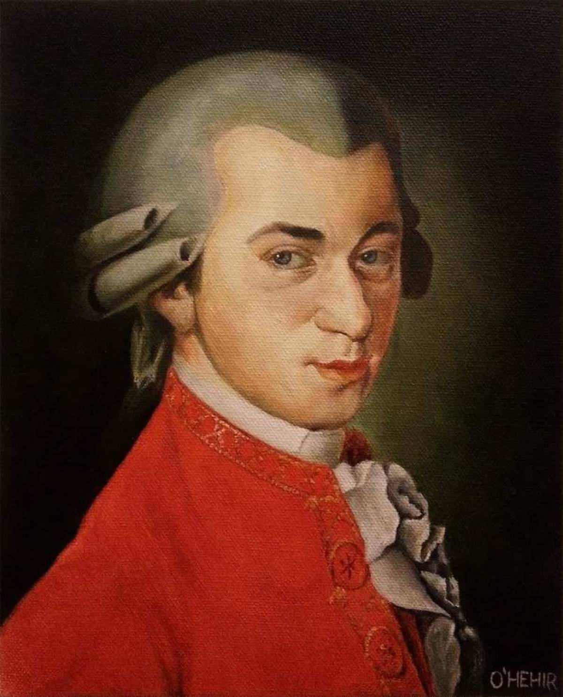

music На главную Выход  Вольфганг Амадей Моцарт Мессы Кантаты Реквием Мессы Слушайте <a href='https://music.yandex.ru/album/262568/track/2574540'>Missa brevis in G KV49: Kyrie</a> — <a href='https://music.yandex.ru/artist/2871065'>Peter Neumann/Kölner Kammerchor/Collegium Cartusianum Köln/Franz-Josef Selig</a> на Яндекс Музыке Слушайте <a href='https://music.yandex.ru/album/262568/track/2574473'>Mass brevis in C major, K.220 "Sparrow Mass": Credo</a> — <a href='https://music.yandex.ru/artist/2871068'>Peter Neumann/Collegium Cartusianum Köln/Kölner Kammerchor/Ann Monoyios/Elisabeth Graf/Oly Pfaff/Franz-Josef Selig</a> на Яндекс Музыке Слушайте <a href='https://music.yandex.ru/album/262568/track/2574588'>Mass brevis in D minor, K.65: Kyrie</a> — <a href='https://music.yandex.ru/artist/2871068'>Peter Neumann/Collegium Cartusianum Köln/Kölner Kammerchor/Ann Monoyios/Elisabeth Graf/Oly Pfaff/Franz-Josef Selig</a> на Яндекс Музыке Наверх Кантаты Слушайте <a href='https://music.yandex.ru/album/2050533/track/18458963'>Sinfonia Concertante for Violin, Viola and Orchestra in E-Flat Major, K. 364: I. Allegro maestoso</a> — <a href='https://music.yandex.ru/artist/449613'>Russian Philharmonic Symphony Orchestra</a> на Яндекс Музыке Слушайте <a href='https://music.yandex.ru/album/2050533/track/18458962'>Sinfonia Concertante for Violin, Viola and Orchestra in E-Flat Major, K. 364: III. Presto</a> — <a href='https://music.yandex.ru/artist/449613'>Russian Philharmonic Symphony Orchestra</a> на Яндекс Музыке Наверх Реквием Слушайте <a href='https://music.yandex.ru/album/139910/track/1336197'>Maurerische Trauermusik, K 477</a> — <a href='https://music.yandex.ru/artist/9170'>Вольфганг Амадей Моцарт</a> на Яндекс Музыке Слушайте <a href='https://music.yandex.ru/album/139910/track/1336193'>Requiem In D Minor, K 626 - 1. Introitus - Requiem Aeternam - 2. Kyrie Eleison</a> — <a href='https://music.yandex.ru/artist/9170'>Вольфганг Амадей Моцарт</a> на Яндекс Музыке Слушайте <a href='https://music.yandex.ru/album/139910/track/1336186'>Requiem In D Minor, K 626 - 3. Sequentia - Dies Irae</a> — <a href='https://music.yandex.ru/artist/9170'>Вольфганг Амадей Моцарт</a> на Яндекс Музыке Наверх
Мессы Слушайте <a href='https://music.yandex.ru/album/262568/track/2574540'>Missa brevis in G KV49: Kyrie</a> — <a href='https://music.yandex.ru/artist/2871065'>Peter Neumann/Kölner Kammerchor/Collegium Cartusianum Köln/Franz-Josef Selig</a> на Яндекс Музыке Слушайте <a href='https://music.yandex.ru/album/262568/track/2574473'>Mass brevis in C major, K.220 "Sparrow Mass": Credo</a> — <a href='https://music.yandex.ru/artist/2871068'>Peter Neumann/Collegium Cartusianum Köln/Kölner Kammerchor/Ann Monoyios/Elisabeth Graf/Oly Pfaff/Franz-Josef Selig</a> на Яндекс Музыке Слушайте <a href='https://music.yandex.ru/album/262568/track/2574588'>Mass brevis in D minor, K.65: Kyrie</a> — <a href='https://music.yandex.ru/artist/2871068'>Peter Neumann/Collegium Cartusianum Köln/Kölner Kammerchor/Ann Monoyios/Elisabeth Graf/Oly Pfaff/Franz-Josef Selig</a> на Яндекс Музыке Наверх
Кантаты Слушайте <a href='https://music.yandex.ru/album/2050533/track/18458963'>Sinfonia Concertante for Violin, Viola and Orchestra in E-Flat Major, K. 364: I. Allegro maestoso</a> — <a href='https://music.yandex.ru/artist/449613'>Russian Philharmonic Symphony Orchestra</a> на Яндекс Музыке Слушайте <a href='https://music.yandex.ru/album/2050533/track/18458962'>Sinfonia Concertante for Violin, Viola and Orchestra in E-Flat Major, K. 364: III. Presto</a> — <a href='https://music.yandex.ru/artist/449613'>Russian Philharmonic Symphony Orchestra</a> на Яндекс Музыке Наверх
Реквием Слушайте <a href='https://music.yandex.ru/album/139910/track/1336197'>Maurerische Trauermusik, K 477</a> — <a href='https://music.yandex.ru/artist/9170'>Вольфганг Амадей Моцарт</a> на Яндекс Музыке Слушайте <a href='https://music.yandex.ru/album/139910/track/1336193'>Requiem In D Minor, K 626 - 1. Introitus - Requiem Aeternam - 2. Kyrie Eleison</a> — <a href='https://music.yandex.ru/artist/9170'>Вольфганг Амадей Моцарт</a> на Яндекс Музыке Слушайте <a href='https://music.yandex.ru/album/139910/track/1336186'>Requiem In D Minor, K 626 - 3. Sequentia - Dies Irae</a> — <a href='https://music.yandex.ru/artist/9170'>Вольфганг Амадей Моцарт</a> на Яндекс Музыке Наверх